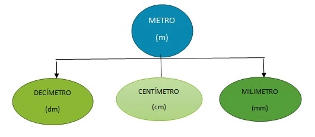

El sistema métrico decimal en un conjunto de medidas o de unidades en el cual los múltiplos y submúltiplos de una unidad de medida están relacionadas entre ellas. Para comprender mejor lo que es un sistema de medidas habría que saber cuáles unidades son las que se van a medir o a calcular, Hay que tomar en cuenta que las magnitudes
Los pequeños podrán aprender en esta etapa la unidad de medida principal y otras de menor complejidad, como la masa y algo de volumen repasaremos algunas de menor complejidad y la forma de enseñarlas bajo el método de las demostraciones en una práctico o juegos sencillos
El metro es la principal medida de longitud, el mismo está dividido de la siguiente manera (siendo sus submúltiplos):

La unidad de medida para medir capacidad es el litro, en relación al litro también existen múltiplos y submúltiplos; encontrando la siguiente clasificación.